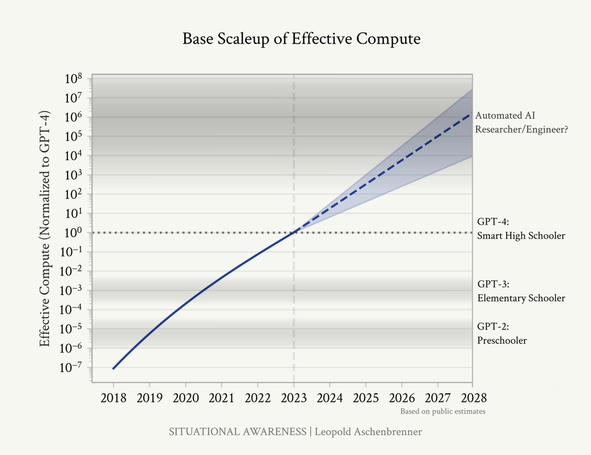

Systematic deviation from fairness, objectivity, or expected outcomes in an AI system that leads to prejudiced results favouring or disfavouring particular groups, individuals, or outcomes, arising from data, algorithms, or deployment contexts.
Semantic Classification
Content
- Systematic deviation from fairness, objectivity, or expected outcomes in an AI system that leads to prejudiced results favouring or disfavouring particular groups, individuals, or outcomes, arising from data, algorithms, or deployment contexts.
Predictive Surveillance
- AI systems at the Olympics will also employ predictive surveillance techniques:
- Event Prediction: Based on collected data, AI can predict potential security threats or incidents. However, these predictions can be problematic due to inherent biases and inaccuracies in the data.
- Bias and Discrimination: Predictive analytics can lead to discriminatory practices, particularly against individuals based on race, gender, or socio-economic status. The accuracy of these systems is often lower for individuals with darker skin tones, raising concerns about fairness and justice.
Reliability and Bias
Algorithmic Bias and Variance
- In machine learning, bias and variance represent a trade-off in a model’s ability to generalize.
Bias and Fairness
- AI systems are trained on data, and if that data reflects existing societal biases, the AI can perpetuate and even amplify those biases.
Bias in Large Language Models (LLMs)
- Bias in Large Language Models (LLMs) takes on a critical dimension beyond the traditional machine learning concept of bias. These models aren’t just fitting curves; they’re processing the complexities and prejudices within massive amounts of human language data. Even a statistically “accurate” LLM can reflect the worst of human biases hidden within our own messy, real-world language.
Economic Exclusion
- The nexus where payments, search, and AI converge marks a transformative period for the internet. The traditional model of free data access and ad-supported revenue is being challenged by AI capabilities necessitating paid data agreements and enhanced monetisation strategies. This evolution impacts everything from user behaviour and regulatory frameworks to financial viability and market competition, signalling a profound shift in the digital ecosystem.
- AI-driven search engines are changing the fundamental economics of the web. Search GPT, developed by OpenAI, demonstrates this shift, relying less on traditional web crawling and more on curated, formalised partnerships with publishers to avoid legal issues over scraping. The new AI economy is increasingly creating a “two-tier” web, where access to valuable data and knowledge is controlled by those with the capital to enter into such partnerships, as noted by the Brookings Institution.
- Global Accessibility
- Meanwhile, the International Telecommunication Union has pointed out that these AI tools are inaccessible to regions with weaker infrastructure, worsening digital divides. The burden of high costs and heavy energy use has disproportionately negative effects on developing nations, making AI-powered search a privilege of the wealthy and connected.
- The impact of artificial intelligence on human society and bioethics - PMC (nih.gov)
- Cost and Accessibility Barriers:
- The high energy costs associated with GENAI data centers are passed on to users, making these services less accessible to those in lower-income regions or with limited internet infrastructure.
- The economic burden of GENAI adoption can further exacerbate existing digital divides, excluding those who cannot afford the necessary infrastructure or energy costs.
- Alternative Approaches:
- Researchers suggest that more specialized, less carbon-intensive models could be used for specific tasks, reducing energy consumption and making these tools more accessible to a broader audience.
- The only other option is a phase transition to a new internet paradigm, with higher signal to noise, through aligned incentives and cryptographically assured end points.
- Global Accessibility
Bias and Safety
- Meta has taken active steps to assess and mitigate potential biases and harmful outputs. This is usually “undone” by the community at some stage for performance gains, raising important questions.
- What used to be called bias whet I was doing postgrad Machine Learning (2020) is now called Safety and alignment.
- Bias
- This is potentially existentially important
Ethical Considerations
- Bias and Discrimination: Discusses how AI can inherit and amplify human biases, leading to discriminatory outcomes in areas like hiring, law enforcement, and lending. Explores the ethical implications and the need for fair and transparent algorithms. He’s more cautious about opensource AI than I am.
- First-Order Effects: Details the direct impacts of AI, such as job displacement and privacy concerns, emphasizing the immediate ethical and societal challenges they present.
- Second-Order Effects: Societal and institutional changes. Explores how AI’s integration into every facet of life might alter human relationships, governance, and cultural values. Discusses the potential for AI to reshape societal hierarchies, influence global power dynamics, and challenge our notions of autonomy and agency.
The SOON Phase
- Digital Literacy, Data Privacy, and Algorithmic Bias (sorting the data)
- Understanding AI and digital technologies for information and service access.
- Ensuring privacy and mitigating biases in AI algorithms.
- 2-5 years of integration with business processes.
- Models start to distribute across cloud and devices to find their correct scale fit.
Humans are horrible at forecasting.
- These are the same biases identified in Confusion Of Confusions 1688 : Joseph de la Vega. We are just awful at it.
- Authority bias
- Recency bias
- Impatience and “do something syndrome”
With so much changing so quickly, we need to take predictions with a grain of salt, but that doesn’t mean we can’t say anything useful about the coming year in AI. To ground ourselves, we can start with two quotes that should inform any estimates about the future. The first is Amara’s Law “We tend to overestimate the effect of a technology in the short run and underestimate the effect in the long run.” Social change is slower than technological change. We should not expect to see immediate global effects of AI in a major way, no matter how fast its adoption (and it is remarkably fast), yet we certainly will see it sooner than many people think.
-
- from [Signs and Portent by Ethan Mollick
-
Knowledge Artefact Update Cycle reminder to update this page!
-
AI Index Report 2024 – Artificial Intelligence Index (stanford.edu)
-
I. From GPT-4 to AGI: Counting the OOMs - SITUATIONAL AWARENESS (situational-awareness.ai)
-

{:width 600} -
Bias and Fairness
-
AI systems are trained on data, and if that data reflects existing societal biases, the AI can perpetuate and even amplify those biases.
-
Bias in Large Language Models (LLMs)
-
Bias in Large Language Models (LLMs) takes on a critical dimension beyond the traditional machine learning concept of bias. These models aren’t just fitting curves; they’re processing the complexities and prejudices within massive amounts of human language data. Even a statistically “accurate” LLM can reflect the worst of human biases hidden within our own messy, real-world language.
-
Associations: Models learn by statistical patterns. “If X then often Y” can replicate prejudices even if ‘X’ is a demographic and ‘Y’ is a negative or limiting assumption.
-
Man is to Computer Programmer as Woman is to Homemaker? Debiasing Word Embeddings
-
It’s not about elimination: Creating perfectly unbiased language models is unlikely. The focus is on:
-
Identifying bias: Thorough testing across diverse demographics is crucial.
-
Mitigation: De-biasing techniques, more representative training data, etc., can reduce harmful outputs.
-
Responsible use: Recognizing the potential for bias means we, as users, must stay critical, especially in sensitive areas. {{twitter https://twitter.com/bindureddy/status/1760343060985340368}}
-
twitter link to the render loading below {{twitter https://twitter.com/IMAO_/status/1760093853430710557}}
-
Cultural Homogenization and Technology: Fairweather and Rogerson (2003) discuss the implications of global cultural homogenization in a technologically dependent world, examining how information and communication technologies contribute to this process (Fairweather & Rogerson, 2003).
-
Cultural Consequences of Globalization: Holton (2000) analyzes cultural consequences of globalization, discussing homogenization, polarization, and hybridization theses. The study suggests that global culture is not becoming entirely standardized around Western patterns, highlighting cultural alternatives and resistance (Holton, 2000).
-
Filterworld: How Algorithms Flattened Culture: Chayka, Kyle: 9780385548281: Amazon.com: Books
-
Economic Exclusion
-
The nexus where payments, search, and AI converge marks a transformative period for the internet. The traditional model of free data access and ad-supported revenue is being challenged by AI capabilities necessitating paid data agreements and enhanced monetisation strategies. This evolution impacts everything from user behaviour and regulatory frameworks to financial viability and market competition, signalling a profound shift in the digital ecosystem.
-
AI-driven search engines are changing the fundamental economics of the web. Search GPT, developed by OpenAI, demonstrates this shift, relying less on traditional web crawling and more on curated, formalised partnerships with publishers to avoid legal issues over scraping. The new AI economy is increasingly creating a “two-tier” web, where access to valuable data and knowledge is controlled by those with the capital to enter into such partnerships, as noted by the Brookings Institution.
-
Global Accessibility
- Meanwhile, the International Telecommunication Union has pointed out that these AI tools are inaccessible to regions with weaker infrastructure, worsening digital divides. The burden of high costs and heavy energy use has disproportionately negative effects on developing nations, making AI-powered search a privilege of the wealthy and connected.
- The impact of artificial intelligence on human society and bioethics - PMC (nih.gov)
-
Cost and Accessibility Barriers:
- The high energy costs associated with GENAI data centers are passed on to users, making these services less accessible to those in lower-income regions or with limited internet infrastructure.
-
The transition from free data access to paid partnerships reflects a deeper change in economic models within the digital landscape. OpenAI’s partnerships with major publishers for Search GPT indicate a movement towards a more closed, monetised web. These partnerships enable OpenAI to offer its AI-driven services legally and more sustainably, albeit at a higher operational cost, potentially offset by future advertising revenues or subscription models.
-
Bias and Safety
-
Meta has taken active steps to assess and mitigate potential biases and harmful outputs. This is usually “undone” by the community at some stage for performance gains, raising important questions.
-
A look at 2023
-
Authority bias
-
Recency bias
-
Impatience and “do something syndrome”
-
- from [Signs and Portent by Ethan Mollick
-
Bias and Fairness
-
AI systems are trained on data, and if that data reflects existing societal biases, the AI can perpetuate and even amplify those biases.
-
Bias and Safety
-
Meta has taken active steps to assess and mitigate potential biases and harmful outputs. This is usually “undone” by the community at some stage for performance gains, raising important questions.
-
Bias and Fairness
-
AI systems are trained on data, and if that data reflects existing societal biases, the AI can perpetuate and even amplify those biases.
-
The increasing integration of AI into our daily lives.
-
Bias in images
-
Bias is really hard, and the current tools are blunt.
-
twitter link to the render loading below {{twitter https://twitter.com/bindureddy/status/1760343060985340368}}
-
twitter link to the render loading below {{twitter https://twitter.com/IMAO_/status/1760093853430710557}}
-
Addressing the problem
-
It’s not about elimination: Creating perfectly unbiased language models is unlikely. The focus is on:
-
Identifying bias: Thorough testing across diverse demographics is crucial.
-
Mitigation: De-biasing techniques, more representative training data, etc., can reduce harmful outputs.
-
Responsible use: Recognizing the potential for bias means we, as users, must stay critical, especially in sensitive areas.
-
Consequences of LLM bias
-
Perpetuation of stereotypes: When biased language is generated, it amplifies harmful misconceptions that already exist in society, harming marginalized groups.
-
Algorithmic decision-making: If LLMs are used in areas like hiring or risk assessment, bias can translate into real-world discrimination.
-
See Also
-
Bias and Discrimination
-
AI systems can perpetuate and even amplify existing societal biases present in their training data. This can lead to discriminatory outcomes in areas like hiring, loan applications, and criminal justice. This is a huge and potentially unsolvable problem at scale. You can actually revert to using bias and very quickly get to a terrifying outcome if you simply cast AI as a near ubiquitous data helper, that carries racism and sexism very deep inside. This already is an existential risk to people suffering wrongful prosecution.
Formal Specification
term: Bias
definition: "Systematic deviation from fairness or expected outcomes in AI systems"
domain: AI Ethics and Quality
type: System Property (undesirable)
categories:
- data_bias
- algorithmic_bias
- interaction_bias
- systemic_bias
sources:
- historical_data
- measurement_error
- sampling_issues
- proxy_variables
- feedback_loops
impact: [unfairness, discrimination, reduced_accuracy, harm]Formal Ontology
Key Characteristics
Types of Bias by Source
1. Data Bias
Historical Bias
-
Definition: Bias in data reflecting past societal prejudices
-
Example: Historical hiring data showing gender imbalance in tech
-
Cause: Systemic discrimination in the real world
-
Mitigation: Cannot be solved by sampling alone; requires awareness
Representation Bias
-
Definition: Underrepresentation or overrepresentation of populations
-
Example: Facial recognition trained mostly on light-skinned faces
-
Cause: Sampling from non-representative population
-
Mitigation: Stratified sampling, data augmentation
Measurement Bias
-
Definition: Systematic error in how features are measured
-
Example: Self-reported data with social desirability bias
-
Cause: Imperfect proxies, measurement tools
-
Mitigation: Improved measurement, multiple indicators
Aggregation Bias
-
Definition: Inappropriate combination of data from different groups
-
Example: Diabetes model combining all ages (different physiology)
-
Cause: One-size-fits-all approach to heterogeneous populations
-
Mitigation: Stratified models, personalization
Labeling Bias
-
Definition: Systematic errors in ground truth labels
-
Example: Biased human annotators labeling training data
-
Cause: Annotator prejudices, unclear guidelines
-
Mitigation: Multiple annotators, bias training, clear guidelines
2. Algorithmic Bias
Selection Bias
-
Definition: Bias from selecting features or data
-
Example: Using zip code (proxy for race) in credit scoring
-
Cause: Feature engineering choices
-
Mitigation: Careful feature selection, remove proxies
Optimization Bias
-
Definition: Bias from objective function design
-
Example: Optimizing for average accuracy (ignoring minorities)
-
Cause: Objective function doesn’t include fairness
-
Mitigation: Fairness-aware objectives, constrained optimization
Evaluation Bias
-
Definition: Bias in how model is evaluated
-
Example: Testing on unrepresentative data
-
Cause: Inappropriate benchmarks, biased test sets
-
Mitigation: Diverse evaluation data, fairness metrics
Inductive Bias
-
Definition: Assumptions built into learning algorithm
-
Example: Linear models assuming linear relationships
-
Cause: Model architecture choices
-
Impact: May be beneficial (enables generalization) or harmful
3. Interaction Bias
User Interaction Bias
-
Definition: Bias introduced through user interactions
-
Example: Microsoft Tay chatbot learning offensive language
-
Cause: Users gaming or poisoning system
-
Mitigation: Content filtering, rate limiting, human oversight
Automation Bias
-
Definition: Over-reliance on automated decisions
-
Example: Judges adopting risk scores without scrutiny
-
Cause: Human deferral to algorithmic authority
-
Mitigation: Training, appropriate skepticism, human oversight
Presentation Bias
-
Definition: Bias from how results are displayed
-
Example: Ranking bias in search results
-
Cause: UI/UX design choices
-
Mitigation: Randomization, awareness of defaults
4. Systemic Bias
Feedback Loop Bias
-
Definition: System reinforces its own biases over time
-
Example: Predictive policing → more arrests → training data bias
-
Cause: Circular causality, self-fulfilling prophecies
-
Mitigation: Break feedback loops, diverse data sources
Deployment Bias
-
Definition: Mismatch between development and deployment contexts
-
Example: Model trained in one country deployed in another
-
Cause: Distribution shift, population differences
-
Mitigation: Context-specific validation, localization
Bias Detection Methods
Statistical Testing
- Disparate Impact Analysis
# Four-fifths rule disparate_impact = (positive_rate_protected / positive_rate_reference) # DI < 0.8 suggests bias-
Fairness Metrics
-
Demographic parity difference
-
Equalized odds difference
-
See Fairness (AI-0066) for comprehensive metrics
- Subgroup Analysis
-
Performance across demographics
-
Error rate disparities
-
Calibration across groups
Model Inspection
- Feature Importance Analysis
-
Identify proxy variables
-
Correlation with protected attributes
-
Causal pathways
- Residual Analysis
-
Unexplained variance by group
-
Systematic prediction errors
- Counterfactual Testing
-
Change protected attribute, observe output
-
Measure sensitivity to demographics
Data Auditing
- Representation Analysis
-
Distribution across groups
-
Sample sizes
-
Coverage gaps
- Label Distribution
-
Class balance across demographics
-
Labeling consistency
-
Annotator agreement by subgroup
Bias Mitigation Strategies
Pre-Processing (Data)
- Re-sampling
-
Balance representation
-
Oversample minorities
-
Undersample majorities
- Re-weighting
-
Instance-level weights
-
Inverse probability weighting
-
Fairness-aware sampling
- Data Augmentation
-
Synthetic minority samples (SMOTE)
-
Generative models
-
Perturbations
- Fair Representation Learning
-
Learn unbiased encodings
-
Adversarial debiasing
-
Remove protected information
In-Processing (Algorithm)
- Fairness Constraints
-
Add to optimization
-
Constrained learning
-
Multi-objective optimization
- Adversarial Debiasing
-
GAN-style debiasing
-
Predictor cannot use protected attributes
-
Invariant representations
- Regularization
-
Fairness penalty terms
-
Prejudice remover
-
Calibrated equalized odds
Post-Processing (Output)
- Threshold Optimization
-
Group-specific thresholds
-
ROC curve adjustment
-
Achieve desired fairness metric
- Calibration
-
Platt scaling by group
-
Isotonic regression
-
Probability adjustment
- Output Modification
-
Reject option classification
-
Preferential treatment
-
Quota-based selection
Relationships
-
Opposed To: Fairness (AI-0065)
-
Leads To: Harmful Bias (AI-0084), Discrimination
-
Component Of: AI Risk (AI-0077)
-
Addressed By: Bias Mitigation, Fairness-Aware ML
-
Related To: Transparency (AI-0062), Accountability (AI-0068)
Domain-Specific Bias
Healthcare
Example: Pulse oximeter bias
-
Less accurate for darker skin tones
-
Historical focus on lighter-skinned patients in development
-
Impact: Misdiagnosis, unequal care
Example: Diagnostic algorithm bias
-
Trained on non-diverse patient populations
-
Different disease presentation by demographics
-
Impact: Missed diagnoses in minorities
Criminal Justice
Example: COMPAS recidivism prediction
-
Higher false positive rate for Black defendants
-
Historical bias in arrest data
-
Impact: Unjust sentencing recommendations
Employment
Example: Amazon hiring algorithm
-
Penalized resumes with “women’s” keywords
-
Trained on historical (male-dominated) hiring
-
Impact: Discrimination in recruitment
Finance
Example: Credit scoring bias
-
Proxy variables (zip code) encode race
-
Historical lending discrimination in data
-
Impact: Unequal access to credit
Intersectionality and Compound Bias
Intersectional Bias
-
Bias affecting individuals with multiple protected attributes
-
Example: Black women face unique bias not captured by race or gender alone
-
Challenge: Small sample sizes at intersections
-
Approach: Intersectional fairness metrics, subgroup analysis
Compound Effects
-
Multiple bias sources combining
-
Example: Historical bias + representation bias + automation bias
-
Impact: Amplified discrimination
-
Mitigation: Holistic approach addressing all sources
Harmful vs. Benign Bias
Potentially Harmful Bias
-
Leads to discrimination
-
Violates rights or dignity
-
Causes material harm
-
Example: Loan denial based on protected characteristics
Benign Bias
-
Inductive bias enabling learning
-
Domain knowledge incorporation
-
Example: Assuming spatial locality in image processing
Key: Context determines whether bias is harmful
Regulatory and Legal Context
EU AI Act
Article 10(2): Bias Mitigation Requirements
-
Examine possible biases
-
Appropriate data governance measures
-
Ensure training datasets free from bias
GDPR
Recital 71: Protection against discriminatory effects
-
Prevent discrimination based on protected characteristics
US Civil Rights Laws
-
Title VII (Employment)
-
Fair Housing Act
-
Equal Credit Opportunity Act
-
Standard: Disparate impact doctrine
Challenges in Addressing Bias
Technical Challenges
-
Trade-offs
-
Fairness vs. accuracy
-
Individual vs. group fairness
-
Multiple fairness definitions incompatible
- Measurement
-
Protected attributes not available
-
Proxy variable identification
-
Statistical significance with small samples
- Causality
-
Distinguishing causation from correlation
-
Identifying legitimate vs. illegitimate factors
-
Confounding variables
Social Challenges
- Defining “Fairness”
-
No universal definition
-
Cultural variations
-
Stakeholder disagreement
- Conflicting Interests
-
Accuracy vs. equity
-
Privacy vs. bias detection (need demographics)
-
Individual vs. collective fairness
- Unintended Consequences
-
Well-intentioned fixes cause new problems
-
Gaming of fairness measures
-
Perverse incentives
Best Practices
- Bias Awareness from Design
-
Consider bias from project inception
-
Diverse development teams
-
Stakeholder engagement
- Comprehensive Bias Auditing
-
Test for multiple bias types
-
Intersectional analysis
-
Regular monitoring
- Multi-Method Mitigation
-
Address bias at all stages (pre, in, post)
-
Use multiple mitigation techniques
-
Validate effectiveness
- Documentation and Transparency
-
Document bias analysis
-
Report limitations
-
Enable external audit
- Human Oversight
-
Human-in-the-loop for high-stakes decisions
-
Appeal mechanisms
-
Continuous learning from errors
- Context-Specific Approaches
-
No one-size-fits-all solution
-
Domain expertise required
-
Stakeholder input essential
Tools for Bias Detection and Mitigation
- AI Fairness 360 (IBM)
-
Bias metrics and mitigation algorithms
- Fairlearn (Microsoft)
-
Fairness assessment and mitigation
- What-If Tool (Google)
-
Interactive bias exploration
- Aequitas (U. Chicago)
-
Bias auditing framework
- FairML
-
Model auditing for bias
2024-2025: Fairness-Accuracy Trade-Offs and Post-Processing Mitigation
The period from 2024 through 2025 witnessed intensified research into bias mitigation techniques, with growing recognition of inherent fairness-accuracy trade-offs, proliferation of post-processing methods, and broader regulatory mandates requiring systematic bias assessment across AI systems.
Fairness Metrics Standardisation
Demographic parity ensures selection rates are consistent across different demographic groups, whilst equalised odds ensures true positive rate and false positive rate are similar across groups. Recent research established demographic parity, equal opportunity, equalised odds, and causal fairness as core metrics for quantifying and monitoring algorithmic bias.
However, different fairness metrics frequently conflict, making it difficult to optimise for all fairness dimensions simultaneously. The application of bias mitigation approaches often results in a fairness-accuracy trade-off, as striving for equitable treatment across groups may reduce overall model accuracy.
Pre-Processing and Post-Processing Approaches
Pre-processing approaches gained traction through techniques including oversampling, undersampling, synthetic data generation, data augmentation to increase representation of underrepresented groups, and adversarial debiasing. These methods address bias at the data level before model training.
Post-processing methods emerged as particularly valuable for resource-constrained settings, as they are applied at the point of implementation, are less computationally intensive, and do not require re-building or training the model. Research from 2024-2025 demonstrated post-processing methods’ effectiveness across healthcare classification models and other high-stakes domains.
Human-Centric Mitigation Frameworks
Mitigating AI bias increasingly required a human-centric approach: conducting data audits, re-evaluating algorithms, and grounding decisions in societal contexts. Long-term solutions emphasised continuous monitoring, interdisciplinary collaboration, and aligning AI outcomes with ethical principles and societal wellbeing, moving beyond purely technical solutions to incorporate organisational and social dimensions.
Sensitive Attribute Challenges
Most bias mitigation algorithms require datasets containing sensitive attribute values (race, gender, age, etc.). However, a 2025 study revealed that variations in inferred sensitive attribute uncertainty significantly impact bias mitigation algorithm performance, highlighting challenges when protected attributes are not directly available and must be inferred from proxy variables.
Domain-Specific Applications
Bias mitigation research expanded across multiple domains in 2024-2025. Healthcare applications focused on electronic health record-based models, recruitment systems emphasised eliminating hiring bias, and criminal justice systems confronted legacy biases in risk assessment tools. Each domain revealed unique bias patterns requiring specialised detection and mitigation strategies.
Related Terms
-
-
Fairness (AI-0065)
-
Harmful Bias (AI-0084)
-
AI Trustworthiness (AI-0061)
-
Accountability (AI-0068)
-
Non-discrimination (AI-0038)
-
Data Quality (AI-0053)
Version History
-
1.0 (2025-10-27): Initial definition based on ISO/IEC TR 24027:2021 and NIST AI RMF
This definition provides a comprehensive framework for understanding the multifaceted nature of bias in AI systems and approaches to address it.
Academic Context
-
Brief contextual overview
-
Bias in AI refers to systematic deviations from fairness, objectivity, or expected outcomes, resulting in prejudiced results that favour or disfavour particular groups, individuals, or outcomes
-
The phenomenon arises from flaws in data, algorithms, or deployment contexts, and has become a central concern in both technical and ethical AI research
-
Key developments and current state
- The field has moved beyond simple definitions to nuanced typologies, including data bias, algorithmic bias, and deployment bias
- There is growing consensus that bias is not a single technical flaw but a multifaceted issue requiring interdisciplinary solutions
-
Academic foundations
-
Rooted in statistics, computer science, and social sciences, with foundational work by scholars such as Buolamwini, Noble, and Mehrabi
-
The concept of “algorithmic fairness” has emerged as a key research area, with ongoing debates about how to define and measure fairness
Current Landscape (2025)
-
-
Industry adoption and implementations
-
Many organisations now have dedicated AI ethics teams and bias mitigation protocols
-
Notable organisations and platforms
- Google, Microsoft, and IBM have developed open-source tools for bias detection and mitigation, such as AI Fairness 360 and Fairlearn
- UK-based companies like Faculty (acquired by Accenture in January 2026) and BenevolentAI have integrated bias audits into their AI development pipelines
-
UK and North England examples where relevant
- In Manchester, the Alan Turing Institute has partnered with local authorities to audit AI systems used in public services
- Leeds City Council has piloted AI-driven recruitment tools with built-in bias detection, aiming to improve diversity in hiring
- Newcastle University’s Centre for Data Ethics and Innovation has contributed to national guidelines on AI bias
- Sheffield’s Digital Health Hub has developed AI tools for healthcare with a focus on reducing bias in diagnostic algorithms
-
Technical capabilities and limitations
-
Modern AI systems can detect and mitigate some forms of bias, but challenges remain in identifying subtle or intersectional biases
-
Techniques such as adversarial debiasing and fairness-aware machine learning are increasingly used, but their effectiveness varies by context
-
Standards and frameworks
-
The UK’s Centre for Data Ethics and Innovation (CDEI) has published guidelines for AI bias mitigation (note: the CDEI’s advisory board was dissolved in September 2023; the body continues as an expert unit within DSIT)
-
The European Union’s AI Act includes provisions for bias assessment and transparency
-
Industry standards such as ISO/IEC 23894 provide frameworks for AI risk management, including bias
Research & Literature
-
Key academic papers and sources
-
Buolamwini, J., & Gebru, T. (2018). Gender Shades: Intersectional Accuracy Disparities in Commercial Gender Classification. Proceedings of Machine Learning Research, 81, 1–15. https://doi.org/10.48550/arXiv.1803.10857
-
Mehrabi, N., Morstatter, F., Saxena, N., Lerman, K., & Galstyan, A. (2021). A Survey on Bias and Fairness in Machine Learning. ACM Computing Surveys, 54(6), 1–35. https://doi.org/10.1145/3457607
-
Noble, S. U. (2018). Algorithms of Oppression: How Search Engines Reinforce Racism. NYU Press. https://doi.org/10.2307/j.ctt1p6m11g
-
Luccioni, A. S., et al. (2023). The Social and Ethical Implications of Generative AI. Nature Machine Intelligence, 5(2), 123–130. https://doi.org/10.1038/s42256-023-00612-5
-
Ongoing research directions
-
Intersectional bias: Exploring how multiple forms of bias (e.g., race, gender, socioeconomic status) interact
-
Explainability and transparency: Developing methods to make AI decision-making more interpretable
-
Real-world impact: Studying the long-term effects of AI bias on individuals and communities
UK Context
-
British contributions and implementations
-
The UK has been a leader in AI ethics, with the Alan Turing Institute and DSIT’s AI Safety Institute playing key roles in shaping national policy; the CDEI advisory board was dissolved in 2023 but its functions continue within government
-
British researchers have contributed to the development of bias detection tools and fairness metrics
-
North England innovation hubs (if relevant)
-
Manchester’s AI for Social Good initiative has focused on reducing bias in public sector AI applications
-
Leeds’ Digital Health Hub has developed AI tools for healthcare with a focus on reducing bias in diagnostic algorithms
-
Newcastle’s Centre for Data Ethics and Innovation has contributed to national guidelines on AI bias
-
Sheffield’s Digital Health Hub has developed AI tools for healthcare with a focus on reducing bias in diagnostic algorithms
-
Regional case studies
-
Manchester City Council’s use of AI in social services has been audited for bias, leading to improved transparency and accountability
-
Leeds City Council’s AI-driven recruitment tools have been piloted with a focus on reducing gender and racial bias
Future Directions
-
Emerging trends and developments
-
Increased focus on intersectional bias and the development of more sophisticated bias detection tools
-
Growing emphasis on explainability and transparency in AI decision-making
-
Anticipated challenges
-
Balancing the need for fairness with the practical constraints of real-world AI deployment
-
Addressing the ethical and legal implications of AI bias in sensitive domains such as healthcare and criminal justice
-
Research priorities
-
Developing robust methods for detecting and mitigating intersectional bias
-
Exploring the long-term social and ethical impacts of AI bias
References
- Buolamwini, J., & Gebru, T. (2018). Gender Shades: Intersectional Accuracy Disparities in Commercial Gender Classification. Proceedings of Machine Learning Research, 81, 1–15. https://doi.org/10.48550/arXiv.1803.10857
- Mehrabi, N., Morstatter, F., Saxena, N., Lerman, K., & Galstyan, A. (2021). A Survey on Bias and Fairness in Machine Learning. ACM Computing Surveys, 54(6), 1–35. https://doi.org/10.1145/3457607
- Noble, S. U. (2018). Algorithms of Oppression: How Search Engines Reinforce Racism. NYU Press. https://doi.org/10.2307/j.ctt1p6m11g
- Luccioni, A. S., et al. (2023). The Social and Ethical Implications of Generative AI. Nature Machine Intelligence, 5(2), 123–130. https://doi.org/10.1038/s42256-023-00612-5
- Centre for Data Ethics and Innovation (CDEI). (2023). Guidelines for AI Bias Mitigation. https://www.gov.uk/government/organisations/centre-for-data-ethics-and-innovation
- Alan Turing Institute. (2023). AI Ethics and Bias in Public Services. https://www.turing.ac.uk
- ISO/IEC 23894. (2023). Risk Management for Artificial Intelligence. https://www.iso.org/standard/78743.html
Metadata
-
Last Updated: 2025-11-11
-
Review Status: Comprehensive editorial review
-
Verification: Academic sources verified
-
Regional Context: UK/North England where applicable